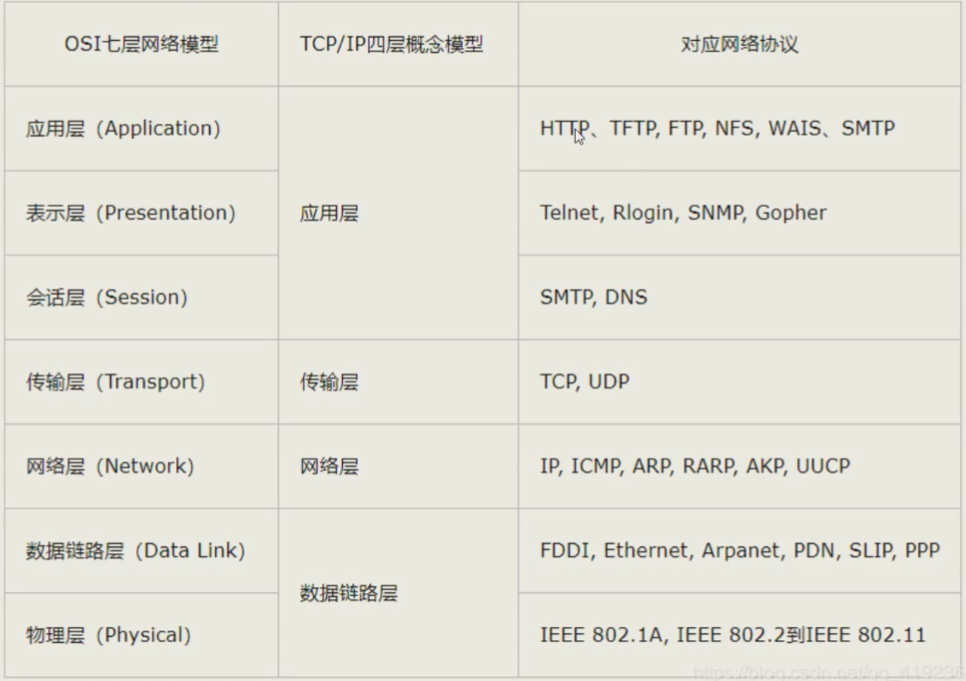
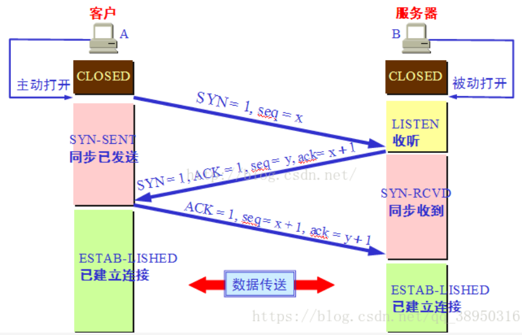
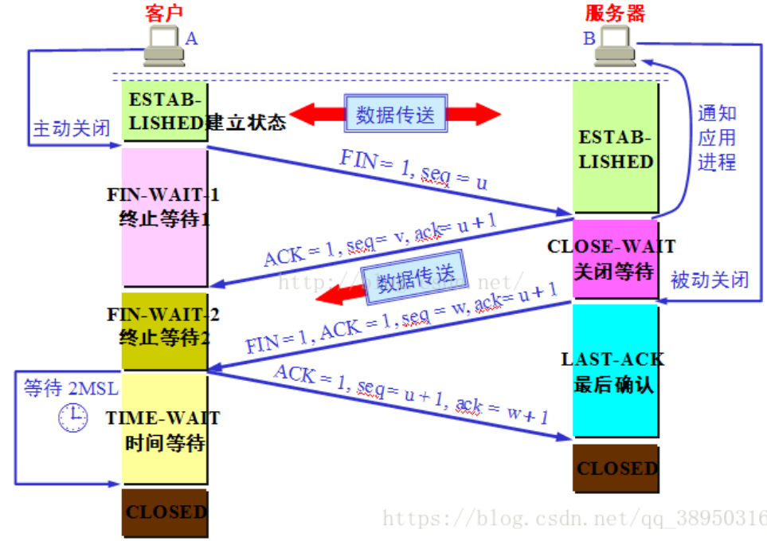

# java 网络编程
# 网络通信的要素
- 通信双方地址
- ip
- 端口
- 规则：网络通信协议
- TCP/IP 参考模型

- TCP/IP 参考模型
# IP 地址
ip 地址：InetAddress
- 唯一定位一台网络上的计算机
- 127.0.0.1：本机 localhost
- ip 地址分类
- ipv4/ipv6
- IPV4，192.168.0.1 ，四个字节组成，0-255
- IPV6，fe80:68ad:4b9b:d467:740b:2b3f:4cd2:543a，128 位，八个无符号整数
- 公网（互联网）、私网（局域网）
- ABCD 类地址
- 域名
- 由于 IP 地址具有不方便记忆并且不能显示地址组织的名称和性质等缺点，人们设计出了域名，并通过网域名称系统（DNS，Domain Name System）来将域名和 IP 地址相互映射，使人更方便地访问互联网，而不用去记住能够被机器直接读取的 IP 地址数串。
- ipv4/ipv6
// 类 InetAddress 包含一些与 ip 有关的方法 | |
try { | |
InetAddress ip = InetAddress.getByName("www.baidu.com"); | |
System.out.println(ip); | |
} catch (UnknownHostException e) { | |
e.printStackTrace(); | |
} |
# 端口
"端口" 是英文 port 的意译，可以认为是设备与外界通讯交流的出口。端口可分为虚拟端口和物理端口。
范围 0~65535
协议：TCP，UDP
端口分类：
公有端口 0~1023
- HTTP：80
- HTTPS：443
- FTP：21
- Telent：23
注册程序端口：1024~49151，分配给用户或者程序
- Tomcat：8080
- MySQL：3306
- Oracle：1521
动态、私有：49152~65535
netstat -ano #查看所有端口
# 通信协议
网络通信协议：速率，传输码率，代码结构，传输控制......
TCP/IP 协议簇重要：
- TCP：用户传输协议
- UDP：用户数据报协议
| TCP：打电话 | UDP：发短信 |
|---|---|
| 链接、稳定 | 不连接、不稳定 |
| 三次握手、四次挥手 | 不管对方是否准备好，都会发送 |
| 客户端、服务端 | 客户端、服务端没有明确的界限 |
| 传输完成、释放链接、效率低 | 会受到 DDos 攻击 |
三次握手、四次挥手：
- 
- 
# TCP
客户端：
- 连接服务器 Socket
- 发送消息
// 客户端 | |
public class TcpClient { | |
public static void main(String[] args) { | |
InetAddress localhost = null; | |
int port = 1234; | |
Socket socket = null; | |
OutputStream os = null; | |
try { | |
// 获取地址 | |
localhost = InetAddress.getByName("localhost"); | |
// 建立链接 | |
socket = new Socket(localhost, port); | |
os = socket.getOutputStream(); | |
os.write("hello world".getBytes(StandardCharsets.UTF_8)); | |
} catch (IOException e) { | |
e.printStackTrace(); | |
}finally { | |
if(socket!=null){ | |
try { | |
socket.close(); | |
} catch (IOException e) { | |
e.printStackTrace(); | |
} | |
} | |
if(os!=null){ | |
try { | |
os.close(); | |
} catch (IOException e) { | |
e.printStackTrace(); | |
} | |
} | |
} | |
} | |
} |
服务器：
- 建立服务的端口 ServerSocket
- 等待用户的链接 accept
- 接收用户的消息
// 服务端 | |
public class TcpServer { | |
public static void main(String[] args) { | |
ServerSocket serverSocket = null; | |
Socket socket = null; | |
InputStream is = null; | |
ByteArrayOutputStream baos = null; | |
try { | |
// 创建服务 | |
serverSocket = new ServerSocket(1234); | |
// 接受链接 | |
socket = serverSocket.accept(); | |
is = socket.getInputStream(); | |
baos = new ByteArrayOutputStream(); | |
byte[] buffer = new byte[1024]; | |
int len; | |
while ((len = is.read(buffer)) != -1) { | |
baos.write(buffer, 0, len); | |
} | |
System.out.println(baos.toString()); | |
} catch (IOException e) { | |
e.printStackTrace(); | |
}finally { | |
if(socket!=null){ | |
try { | |
socket.close(); | |
} catch (IOException e) { | |
e.printStackTrace(); | |
} | |
} | |
if(is!=null){ | |
try { | |
is.close(); | |
} catch (IOException e) { | |
e.printStackTrace(); | |
} | |
} | |
if(baos!=null){ | |
try { | |
baos.close(); | |
} catch (IOException e) { | |
e.printStackTrace(); | |
} | |
} | |
} | |
} | |
} |
# UDP
需要获取对方地址
发送端：
public class UdpClient { | |
public static void main(String[] args) throws Exception { | |
// 建立 Socket | |
DatagramSocket socket = new DatagramSocket(); | |
// 建包 | |
String msg = "hello server!"; | |
InetAddress localhost = InetAddress.getByName("localhost"); | |
int port = 9090; | |
// 数据包 参数：数据，数据的起始位置，数据的长度，地址，端口 | |
DatagramPacket packet = new DatagramPacket(msg.getBytes(), 0, msg.length(), localhost, port); | |
// 发送包 | |
socket.send(packet); | |
// 关闭流 | |
socket.close(); | |
} | |
} |
接收端：
public class UdpServer { | |
public static void main(String[] args) throws Exception { | |
// 开放端口 | |
DatagramSocket socket = new DatagramSocket(9090); | |
// 接受数据 | |
byte[] buffer = new byte[1024]; | |
DatagramPacket packet = new DatagramPacket(buffer, 0,buffer.length); | |
socket.receive(packet); | |
System.out.println(packet.getAddress().getHostAddress()); | |
System.out.println(new String(packet.getData())); | |
// 关闭链接 | |
socket.close(); | |
} | |
} |
# URL
统一资源定位符：定位互联网上的某个资源
DNS 域名解析
协议://ip地址:端口/项目名/资源